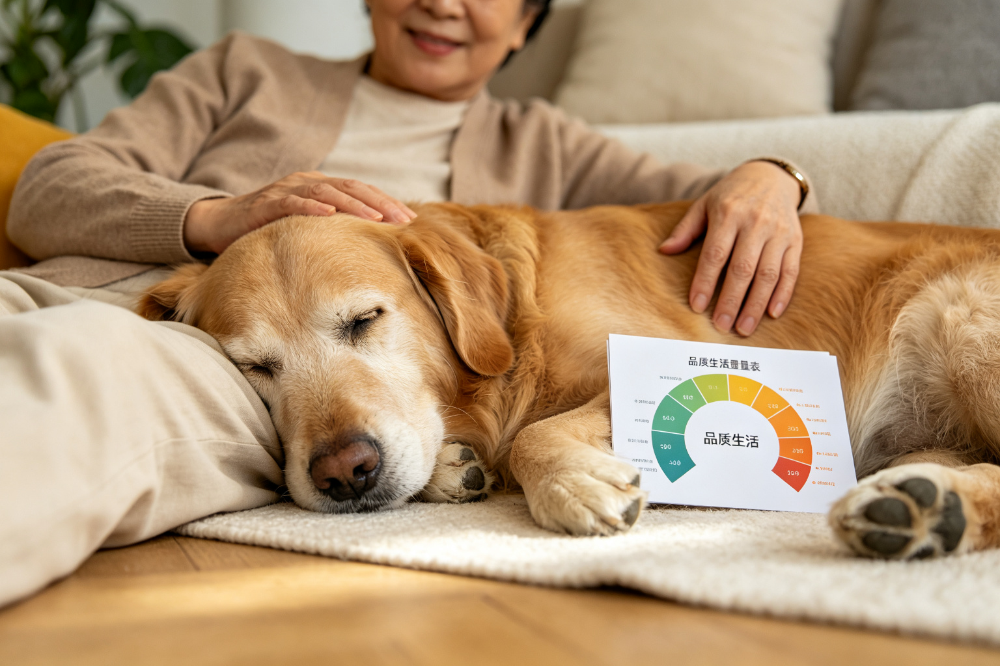

🧓 高齡寵物學
老貓環境佈置：讓高齡貓咪安心生活的6個調整
老貓需要更安穩的休息空間、更方便的貓砂盆位置、以及不要隨意更動的生活節奏。從臥位選擇、登高低檯、到規律作息，6個居家調整讓高齡貓咪更有安全感。...

🧓 高齡寵物學
老狗行動力照護：無障礙居家與溫和運動指南
老狗走路變慢、不愛跳沙發、起床後僵硬——這些是年紀增長後的正常變化。從防滑地板、寵物坡道、軟墊床到短距離散步，打造讓老狗安心活動的居家環境。...

🧓 高齡寵物學
老貓飲食與飲水：高齡貓咪的餵食調整指南
高齡貓咪的飲食習慣會隨年齡改變——食慾下降、飲水不足、牙口變弱。從多處水源、濕食比例、少量多餐到飼料軟化，調整餵食方式維持老貓的營養與水分。...

🧓 高齡寵物學
高齡寵物感官變化：環境改造與生活適應
老貓老狗的聽力和視力會隨年齡改變——這是正常老化，但可以透過環境調整大幅提升生活品質。從安全居家配置、固定物品位置到與感官退化寵物的溝通方式。...

🧓 高齡寵物學
老狗活動管理：高齡狗狗的運動與休息節奏
高齡狗狗的活動量需要重新調整——太短的散步不夠，太激烈的運動又太累。從適度運動頻率、避免過度興奮、規律作息到夏季防熱，找到老狗最舒適的生活節奏。...

🧓 高齡寵物學
老貓食慾與體重觀察：高齡貓咪飲食變化指南
老貓的食慾和體重會隨年齡波動——突然變好或變差都需要留意。從飲食觀察記錄、體重變化追蹤、餵食方式調整到食物适口性提升，幫助老貓維持穩定的營養攝取。...

🧓 高齡寵物學
高齡毛孩生活品質觀察：日常照顧的溫柔調整
高齡毛孩的舒適度是日常照顧的核心——食慾、活動、互動、清潔，每個指標都反映牠當下的狀態。從生活品質觀察、環境舒適化到情緒安撫，用溫柔的方式陪伴老毛孩。...

🧓 高齡寵物學
高齡寵物睡眠環境：規律作息與舒適休息空間
高齡毛孩的睡眠時間和品質會隨年齡改變——睡得更久、夜間易醒。從臥位選擇、減少夜間干擾、規律日常作息到舒適床墊配置，打造讓老毛孩安心休息的睡眠環境。...

🧓 高齡寵物學
陪伴高齡毛孩：最後階段的溫柔照護
當毛孩年紀大了，每一天的相處都值得珍惜。從舒適的擁抱、規律的飲食、安靜的休息環境到細心的觀察，用溫柔與耐心陪伴高齡毛孩走過每一天。...